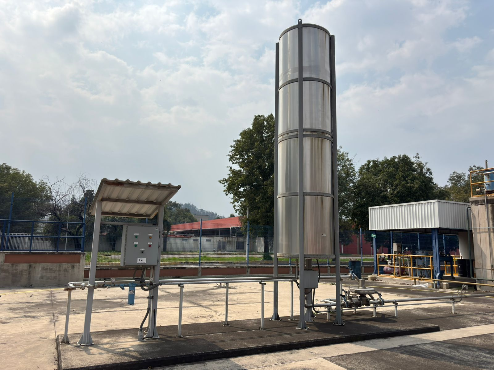
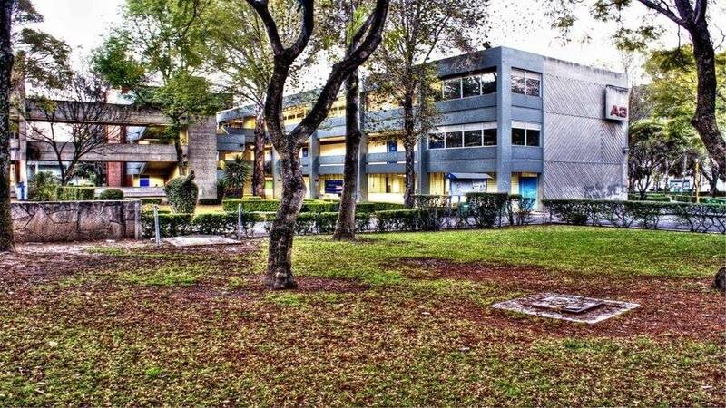
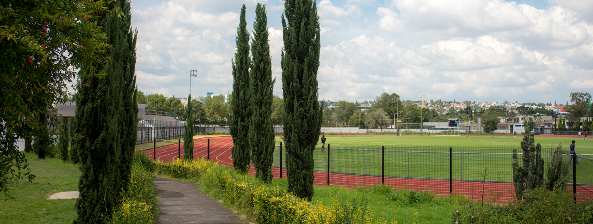
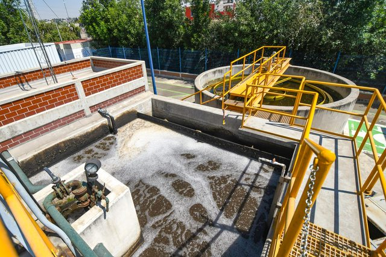
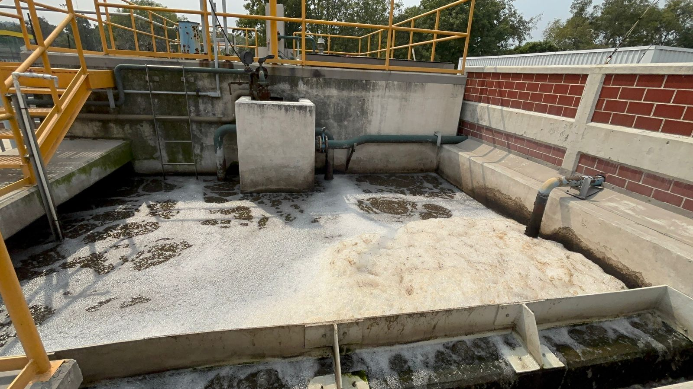
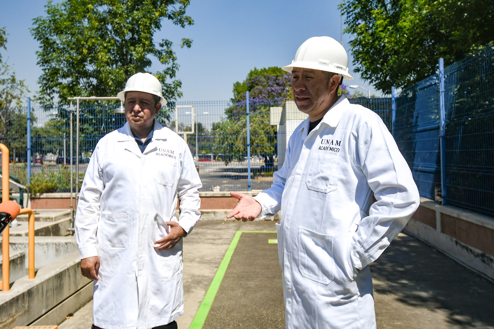
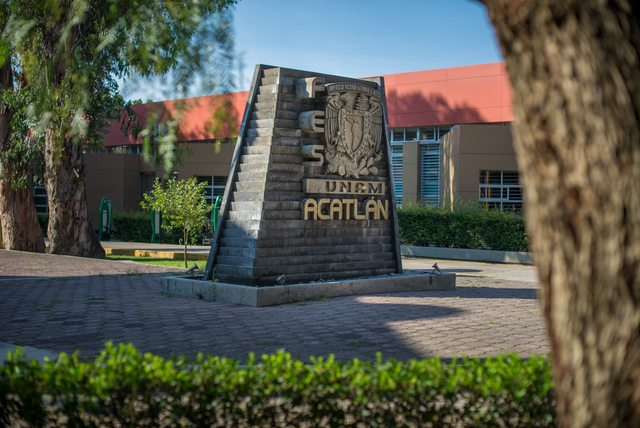
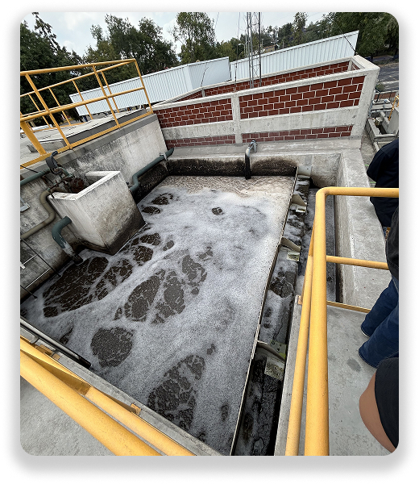
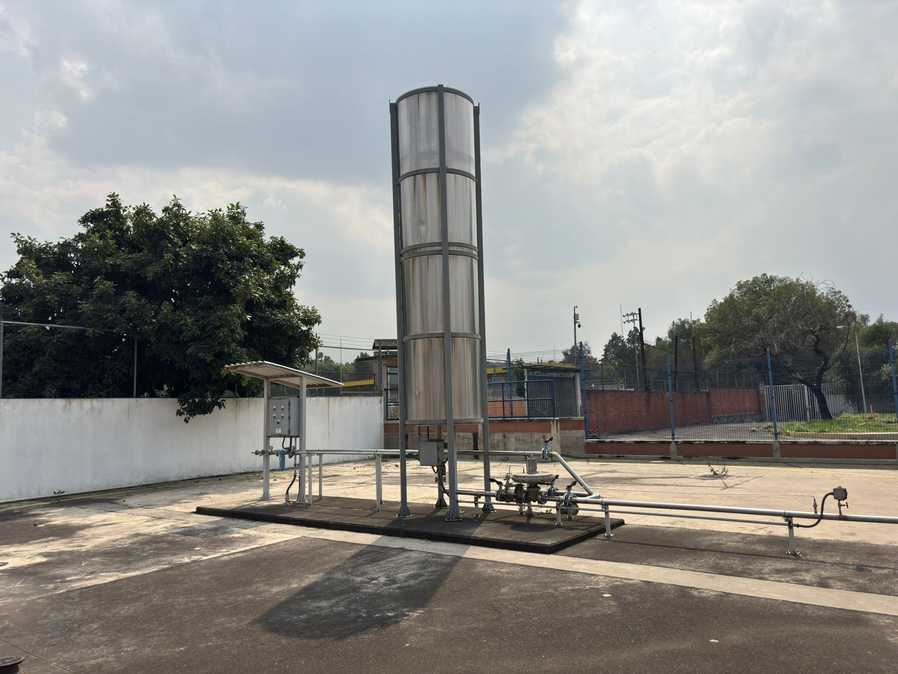

Historia de la PTAR
2014

2014
Inicia Operaciones
Inicio de operaciones de la Planta de Tratamiento de Aguas Residuales de la FES Acatlán. Se construye y comienza a operar una planta con biofiltros diseñados por el Instituto de Ingeniería de la UNAM. Su objetivo es reducir/eliminar el uso de agua potable mediante el tratamiento de aguas residuales para riego.
2018

2018
Inician las pruebas de riego
2019

2019
El año con más agua enviada a riego, más de 5 millones de litros de agua residual tratada.
2020

2020
- Debido a la Pandemia el proceso se detuvo.
- Septiembre: Revisión de estatus del proceso, los lodos del reactor aerobio se habían perdido.
- Reactivación del sistema biológico aerobio.
2021

2021
- Se vuelve a detener el proceso debido a la segunda oleada de la Pandemia.
- Septiembre: Reactivación del sistema biológico de la PTAR.
2022

2022
Se reanuda la actividad en la PTAR después del regreso paulatino de actividades
2023

2023
Se detiene el proceso de la PTAR por paro estudiantil
2024

2024
Reactivación del sistema biológico Aerobio.
2025

2025
Hasta este año se han utilizado más de 18 millones de litros de agua residual tratada en el riego de las áreas verdes de la zona deportiva.